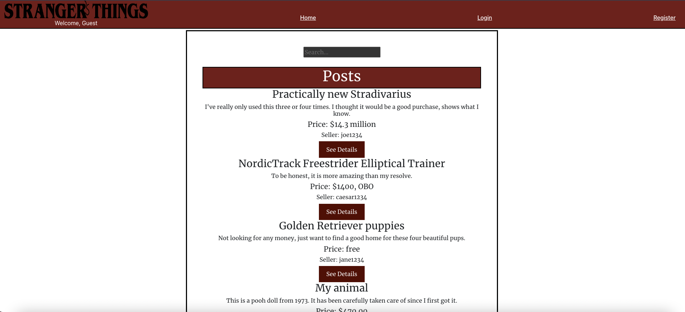

Stranger's Things
Within this project, the team collaborated to create a frontend website which acts as a Craigslist clone. A user is able to register, login, create, edit, and delete their posts as well as message other users about their posts. The main technologies used for this site included HTML, CSS, Javascript, React, Vite, and Bootstrap.
Fitness Tracker
Within this project, the team collaborated to create a fullstack website used to track a users workouts. A user is able to register, login, create routines, add activities to the routines, edit, and delete their routines. The main technologies used for this site included HTML, CSS, Javascript, React, React-App, Node.js, Express,and Bootstrap.
eCommerce Website

Within this project, the team collaborated to create a fullstack website used to sell and buy Marvel NFTs. A user is able to register, login, create NFT's, add NFT's to their cart, link their account to MetaMask, and complete the purchase via MetaMask. Admins are able edit, or delete the NFTs. The main technologies used for this site included HTML, CSS, Javascript, React, React-App, Node.js, Express, Bootstrap, and Prisma.